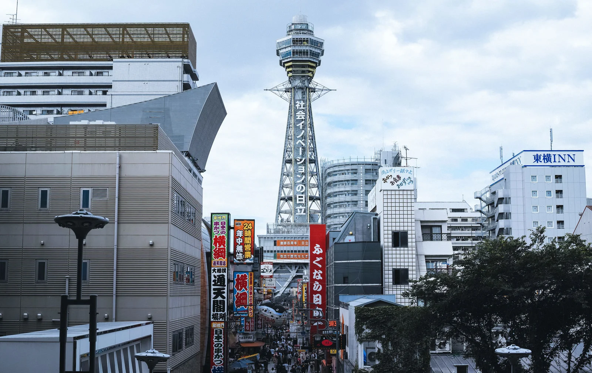

日本美食餐廳推薦
歡樂、華麗，又熱鬧有趣：擁有豐富多樣娛樂的大阪
「新鮮感」和「懷舊感」一年四季都瀰漫在這座城市的各個角落。
此外，上方落語和漫才作為大眾娛樂而誕生，並作為大阪人不可或缺的歡笑文化傳播到日本各地。
它也是一個讓人情不自禁地被娛樂的動人城市。
千房 道頓堀ビル店
超人氣的大阪燒，裡面的配料相當豐富，分量十足。
聯絡方式：
-
地址：大阪府大阪市中央区道頓堀1-5-5
千房道頓堀ビル １Ｆ・２Ｆ・３Ｆ・４Ｆ
- 餐廳電話：050-1807-5395
-
交通：從地鐵難波站步行10分鐘，從近鐵日本橋站步行5分鐘，距離日本橋283米。
- 營業時間： 星期一 ~ 日 AM 11:00– PM 23:00 Last Order 22:00
-
前往 Google 搜尋：千房 道頓堀ビル店
-
前往 Google 地圖查看位置 :
點此前往地圖搜尋
無鉄砲大阪店
大排長龍的濃厚豚骨湯底拉麵店，不喜歡口味太重也沒關係，店裡也有叫淡的湯底，麵的硬度、蔥量，都可以調整
!
聯絡方式：
- 地址：大阪府大阪市浪速区戎本町1-5-21 米田ビル １Ｆ
- 餐廳電話：06-6645-0522
- 交通 (1)：從南海高野線今宮戎站步行2分鐘。
-
交通 (2)：從大阪地鐵御堂筋線、四橋線大國町站4號出口步行2分鐘
距離今宮戎神社 125 公尺。
-
營業時間： 公休日:星期一，二 ~ 日 AM 11:00 – PM 15:00，PM 17:30 –
PM 22:30
-
前往 Google 搜尋：無鉄砲大阪店
-
前往 Google 地圖查看位置 :
點此前往地圖搜尋
越源 1991
在地平價超好吃炸串老店，擁有多種炸物。
聯絡方式：
- 地址：大阪府大阪市浪速区恵美須東2丁目3-9
- 電話：06-6631-2696
-
交通：
從地鐵動物園前站步行5分鐘，距離新今宮站前371米，離通天閣很近。
-
營業時間：公休日 : 星期四，星期一、二、三、五、六、日 AM 12: 00 PM
21:00
-
前往 Google 搜尋：越源
-
前往 Google 地圖查看位置 :
點此前往地圖搜尋